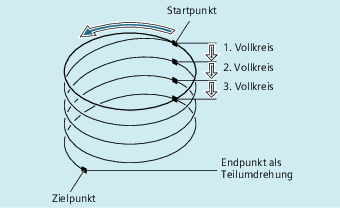

Bewegungsfolge
Startpunkt anfahren
Mit TURN= programmierte Vollkreise ausführen.
Kreisendpunkt anfahren, z. B. als Teilumdrehung.
Punkt 2 und 3 über die Zustelltiefe ausführen.
Aus der Anzahl der Vollkreise plus programmierten Kreisendpunkt (ausgeführt über der Zustelltiefe), ergibt sich die Steigung, mit der die Schraubenlinie gefertigt werden soll.
Programmierung des Endpunkts Schraubenlinieninterpolation
Für detaillierte Erklärungen der Interpolationsparameter siehe Kreisinterpolation.
Programmierter Vorschub
Bei der Schraubenlinieninterpolation empfiehlt sich die Angabe eines programmierten Vorschub-Overrides (CFC). Mit FGROUP kann festgelegt werden, welche Achsen mit programmiertem Vorschub verfahren sollen. Mehr Informationen siehe Kapitel Bahnverhalten.